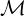
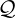
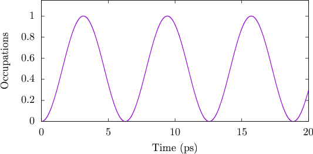
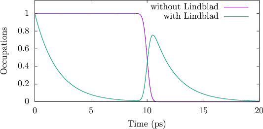
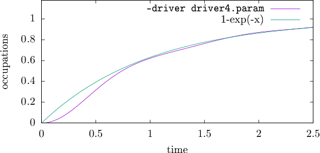

ACE Documentation
Moritz Cygorek
1 Introduction
This document is intended to describe how to use the C++ code ACE for the solution of open
quantum systems using the automated compression of environments (ACE) method. The
article explaining the method can be found here.
Generally, ACE provides numerically exact simulation of the dynamics of an open quantum
systems described by the microscopic Hamiltonian
where HS is the system Hamiltonian and the environment Hamiltonian HE, which also
includes the system-environment coupling, is assumed to be separable into NE independent
modes k. Throughout this document we will denote the dimension of the system Hilbert space
by N while the dimension of the k-th environment mode is Mk (or simply M if all Mk are
identical).
The goal is to obtain the reduced system density matrix discretized on a time grid
tl = ta + lΔt up to a given final time tn = ta + nΔt = te. This can be done using the path
integral expression
where ραl = ρνlμl is the reduced system density matrix at time step l,  describes the free
time evolution of the system, and  is the process tensor (PT) accounting for the effects
of the environment. To keep the notation compact, we combine two Hilbert space
indices on the system density matrix νl and μl into a single Liouville space index
αl = (νl,μl). The GIF can always expressed in the form of a matrix product operator
(MPO)
is the process tensor (PT) accounting for the effects
of the environment. To keep the notation compact, we combine two Hilbert space
indices on the system density matrix νl and μl into a single Liouville space index
αl = (νl,μl). The GIF can always expressed in the form of a matrix product operator
(MPO)
In the explicit derivation of the matrices , the inner indices dl correspond to a complete basis
of the Liouville space of the full environment, which can be extremely large. However, the inner
dimensions of MPOs can be systemaically reduced using established compression
techniques. Here, we use a compression method based on singular value decomposition
(SVD), where singular values below a predefined threshold ϵ are disregarded. The time
discretization Δt and the compression threshold ϵ are the main convergence parameters of
ACE.
The working principle of ACE is to construct the PT in compressed MPO form by
calculating the PTs for the individual environment modes k and then combining
them one by one. After each combination step, the GIF MPO is compressed using
SVDs to reduce the inner dimensions to a manageable size at all times. Once the
compressed PT is calculated, the reduced system density matrix for a given system
Hamiltonian and system initial state can be obtained by contracting a simple tensor
network.
2 Code, Compilation, Dependencies, and Design Choices
The code has been written in C++ to combine low-level optimization (memory storage, access
to LAPACK routines) with high-level abstraction for better usability. Although nothing in the
code depends explicitly on the operating system, the code has been tested only on
Linux.
We have tried to keep the dependencies on other codes minimal. However, the Eigen library
is very handy and provides useful and efficient routines, e.g., for matrix exponentials. We use it
in particular to specify Hamiltonians and density matrices. The numerically most demanding
part of ACE is the calculation of SVDs. Here, we make use of the corresponding LAPACK
routines. In my experience, the Intel MKL implementation of the SVD LAPACK
routines can be significantly faster than other implementations, sometimes by orders of
magnitudes. Therefore, we assume that Eigen as well as the Intel MKL is installed on the
computer.
The installation of ACE via Makefiles needs to be able to find these libraries. To this end,
the corresponding Linux environment variables have to be set. A successful installation of MKL
should automatically set the MKLROOT environment variable to the correct directory. We assume
that the Eigen library is installed in the directory /usr/include/eigen3/. If not, please set
the variable EIGEN_HOME manually in such a way that the file $EIGEN_HOME/Eigen/Eigen
exists.
To compile the code, go into the main directory of ACE and type in the console
> make
This should compile the code and copy the binaries into the bin/ subdirectory. For easy access
later on, we suggest to add this directory to your Linux environment via the PATH variable. For
example, add the follwing line to your ~/.bashrc file
PATH=/.../ACE/bin/:$PATH
where the … are to be replaced to point to the correct absolute directory. Log out
and log in again to activate the changes. Then, go to a temporary directory and
run
> ACE
This should generate a file ACE.out whose first lines are
0 0 0 1 0 0 0 inf inf
0.01 0 0 1 0 0 0 1 0
0.02 0 0 1 0 0 0 1 0
0.03 0 0 1 0 0 0 1 0
0.04 0 0 1 0 0 0 1 0
...
Congratulations! You have just executed your first (rather boring) simulation using
ACE.
3 System dynamics
ACE can be controlled by command line parameters. Alternatively, the command line
parameters can be written into a driver file and the driver file can be specified via the -driver
command line option. The ACE method can deal with arbitrary system-environment couplings,
but it is difficult to provide hard-coded support for the specification of arbitrary
time-dependent and mode-dependent Hamiltonians. So far, only a few specific environments
are implemented. For others, there is no way around adding more C++-code. However,
time-independent system Hamiltonians or Lindblad operators as well as a few predefine
time-dependent Hamiltonians (e.g., Gaussian pulses) can be specified by command line options
using a bra-ket notation.
First, let us discuss some of the most important parameters: The starting time, the final
time, and the time step width can be specified by the command line options -ta, -te, and -dt,
respectively, which have the default values 0, 10, and 0.01 (times are assumed to be measured
in picoseconds if not otherwise specified). You will find the corresponding time grid in the first
column of output file ACE.out, whose name may be changed via the option -outfile.
By default, there will be no environment, the system is a two-level system (TLS)
initially in its ground state, and the system Hamiltonian is HS = 0. For TLSs, if not
specified otherwise, the second and third columns in the output file will be the real and
imaginary part of the diagonal element of the system density matrix corresponding to the
exited state. If no parameters are specified explicitly, these columns should remain
0.
As a first example, run
> ACE -dt 0.001 -te 20 -add_Hamiltonian "{hbar/2*(|1><0|_2+|0><1|_2)}" -outfile ACE1.out
This will generate an output file ACE1.out, which contains the dynamics of a constantly
driven TLS from 0 to 20 ps with time steps of 0.001 ps. The driving is described by the
Hamiltonian HS = (ℏ∕2)(|X⟩⟨G| + |G⟩⟨X|) (note: hbar is given in units of meV/ps). Here, the
bra-ket notation for Hamiltonians has the form |i><j|_d, where d is the dimension of the
Hilbert space. The curly braces are used to indicate the beginning and end of matrix-valued
expressions. On the command line, quotes are required to avoid the removal of curly braces by
the bash shell.
Plotting the second column of ACE1.out (in gnuplot: plot "ACE1.out" using 1:2 with lines)
reveals clear Rabi oscillations of the excited state occupations:

The same result can be obtained creating and editing the file driver1.param:
______________________________________
dt 0.001
te 20
add_Hamiltonian {hbar/2*(|1><0|_2+|0><1|_2)}
outfile ACE1.out
______________________________________
and running
> ACE -driver driver1.param
or simply
> ACE driver1.param
I.e., the first parameter is interpreted as a driver file.
A more complicated scenario can be described by the following driver file (driver2.param),
where an initially excited TLS, optionally subject to radiative decay described by a Lindblad
term, is driven by a Gaussian laser pulse:
______________________________________
dt 0.01
te 20
initial {|1><1|_2}
#add_Lindblad 0.5 {|0><1|_2}
add_Pulse Gauss 10 1 1 0 {(|1><0|_2+|0><1|_2)}
outfile ACE2.out
______________________________________
This produces the following dynamics:

where the two curves are results of calculation where the Lindblad term is either turned off
or on. The # symbol in a driver file indicates a comment, i.e. anything after it is ignored. The
parameters of add_Lindblad are the rate γ and the operator A for the Lindblad
term
The parameters of add_Pulse Gauss are the pulse center (here: 10 ps), the pulse duration
(τFWHM = 1 ps), the pulse area (1π), the detuning (0 meV), and the operator describing the
light-matter coupling.
Finally, we mention that one can also explicitly specify which operator average are to be
printed into the output file by the parameter add_Output, which takes as an argument an
expression (in curly braces) describing the respective operator. When it is first specified,
the default output operators are overridden and replaced by the specified operator
average. Specifying add_Output multiple times adds more columns to the output
file.
4 Environments
In the following subsections, the usage of some of the predefined environments is
demonstrated. The driver files for the examples presented in the published article are
contained in the first 4 subdirectories in the examples directory provided with the
code.
4.1 Fermionic environment
One of the predefined environments is defined by the hopping Hamiltonian
Here, the system is meant to be a Fermionic state that may be occupied or not. The
occupation is created by cS† or destroyed by cS. Similarly, the environment consists of several
Fermionic states, whose occupations are created and destroyed by ck† and ck, respectively. In
the limit NE →∞, the environment consists of a continuum of state, which can be used to
model the electronic states in metallic leads in proximity to a quantum dot. Consider the driver
file:
______________________________________
te 5
dt 1e-2
threshold 1e-7
Leads_N_modes 2
Leads_g 1
Leads_omega_min 0
Leads_omega_max 0
Leads_EFermi 1e4
outfile ACE3.out
______________________________________
Whenever we add an environment, we should specify a compression threshold (denoted ϵ in
the paper). The smaller the threshold, the more accurate the simulation. However, for
very smaller thresholds also the calculation times as well as the memory demands
increase.
Leads_* indicates that what comes after is a parameter for the leads-type environment
specified by the above Hamiltonian. Leads_N_modes tells the code to use 2 Fermionic
states as environment. The coupling strength is determined by Leads_g and the
energies are equidistantly sampled from Leads_omega_min to Leads_omega_max (in
picoseconds; there also exist Leads_E_min and Leads_E_max if we want to specify
the band width in units of meV). Here, both limits are set to zero, so that both
environment modes are resonant to the TLS transition. By setting Leads_EFermi 1e4
(note that 1e4 is the C++ notation for 1 × 104) the Fermi level is set to such a high
value that all environment states are initially occupied. There is also the parameter
Leads_temperature to specify the temperature (in units of Kelvin) of the Fermi distribution.
If not specified, the global temperature parameter will be used, whose default is 4 K. The
initial state of the system is empty. Therefore, electrons will start to move from the
leads to the system. The dynamics is show below and it is discussed further in the
article.

Typically, the environments of open quantum system are assumed to form a continuum. In
ACE, we simply discretize the continuum. For the case of metallic leads, it turns out that using
NE = 10 modes is already not too bad. Consider the driver file driver4.param:
______________________________________
te 2.5
dt 1e-2
threshold 1e-7
Leads_N_modes 10
Leads_rate 1
Leads_omega_min -5
Leads_omega_max 5
Leads_EFermi 1e4
outfile ACE4.out
______________________________________
Here, instead of Leads_g, we use Leads_rate to specify the rate that we would expect in the
Markov limit. Then, the coupling constant is calculated internally by solving the Fermi’s
golden rule expression for g. The respective dynamics is compared with the Markovian result
1 - exp(-x) in the following plot:

Increasing NE even further to about 100 while keeping the same density of states (i.e.
increasing the band width simultaneously) will produce a behaviour very close to the
Markovian results.
4.2 Radiative decay
The coupling of a quantum emitter to the electromagnetic field modes of free space gives rise
to radative decay and can be described by the Hamiltonian
where ak† and ak are Bosonic creation and annihilation operators. In practice, k is a
three-dimensional vector and the photon bands k may be modified by structuring the photon
environment, e.g. by embedding the emitter in a microcavity.
Here, we assume isotropy (i.e., we work exclusively with the modulus k = |k|) and a flat
spectral density of state (as a function of the modulus |k|), and discretize the light field
continuum equidistantly. The only difference between this situation and the coupling to
Fermionic leads is that the mode operators are Bosonic, i.e., they can in principle contain
an arbitarily large number of excitations and the initial state is given by a Bose
distribution instead of a Fermi distribution. Therefore, we use the same set of parameters,
just replacing Leads_* by RadiativeDecay_*. Additionally, we use the parameter
RadiativeDecay_M to specify the cut-off in the number of excitations (dimension of the
respective Hilbert space, i.e., 1+maximal number of photons per mode; default value:
2).
4.3 Phonons/spin-boson model/independent-boson model
A TLS diagonally coupled to a continuum of independent bosons is known as the
independent-boson model or spin-boson model. It also describes the coupling between a
quantum dot (QD) and longitudinal acoustic phonons. In this example, we take the latter as
our use case. The corresponding Hamiltonian is
where bq† and bq are creation and annihilation operators for phonons with wave vector q. It
can be shown that the effects of such an environment are fully characterized by the spectral
density
Solving the original Hamiltonian is very difficult when the number of phonon modes is large.
Thus, we instead solve a replacement Hamiltonian by discretizing the respective spectral
density J(ω). Internally, we can specify arbitrary spectral densities. However, so far only the
spectral density for phonons (described in the article) is accessible via command line options. A
working driver file may be:
QDPhonon_temperature 4 # default: 4
QDPhonon_subtract_polaron_shift true # default: true
QDPhonon_N_modes 100
QDPhonon_M_max 3 # default: 4
QDPhonon_E_max 5 # default: 4
Here, QDPhonon_N_modes is the number of modes, i.e. the number of sample points for the
discretization. QDPhonon_E_max is the cut-off energy determining the maximal value of ω for
the discretization of J(ω). QDPhonon_M_max is the dimension of the Hilbert space for a single
phonon mode (1+maximal number of phonons per mode). The temperature for the initial state
of the bath is given by QDPhonon_temperature (if not specified, temperature is checked). By
setting QDPhonon_subtract_polaron_shift to true (which is the default behaviour) the
polaron shift -∑
q(γq2)∕(ωq) is subtracted from (i.e. the modulus is added to)
the Hamiltonian. This is done to eliminate the effects of the polaron shift when
comparing calculations with and without phonons, which would otherwise affect resonance
conditions.
As an alternative to ACE, the process tensor for Gaussian baths can be calculated using
expressions where the bath is already integrated out [cf. Jørgensen and Pollock Phys. Rev.
Lett. 123, 240602 (2019)]. This method is usually much more efficient and does not require
discretization or truncation of the phonon Hilbert spaces (Recall: The advantage of ACE is its
generality, while the latter method only works for Gaussian baths.) To use this method instead
for phonon simulations with our standard phonon spectral density, the following can be added
to the driver file:
use_process_tensor true
temperature 4
5 Concluding remarks
Further developments of ACE as well as the code are ongoing projects. The documentation
naturally lags behind.